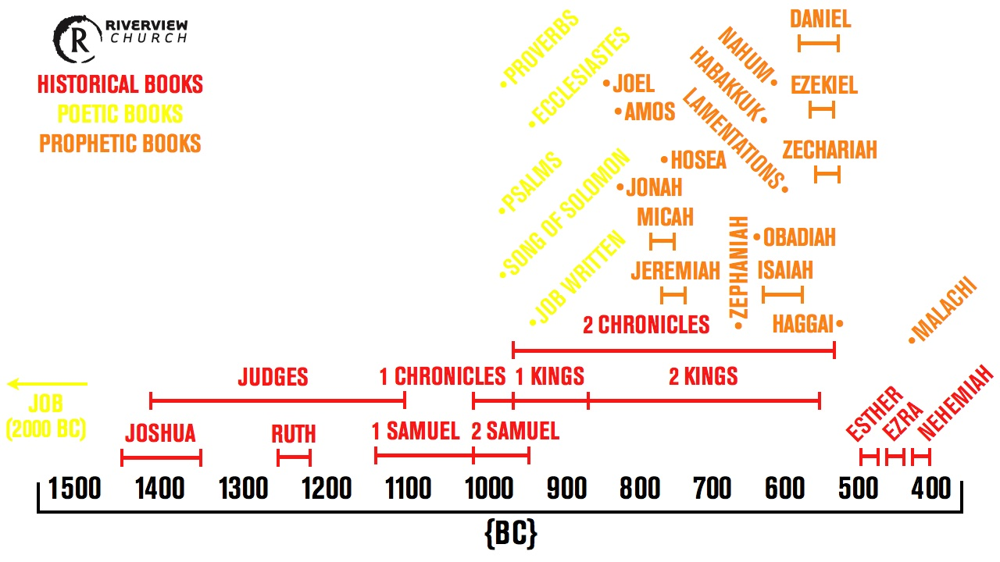

|
 |
(5/5)
Show/hide EXIF data| EXIF Tag | Value |
|---|---|
| BitsPerSample | 8 |
| BlueMatrixColumn | 0.14651 0.07855 0.72157 |
| BlueTRC | Binary data 14 bytes |
| CMMFlags | Not Embedded, Independent |
| ChromaticAdaptation | 1.04788 0.02292 -0.0502 0.02957 0.99049 -0.01706 -0.00923 0.01508 0.75165 |
| ColorComponents | 3 |
| ColorSpaceData | RGB |
| ConnectionSpaceIlluminant | 0.9642 1 0.82491 |
| DeviceAttributes | Reflective, Glossy, Positive, Color |
| DeviceManufacturer | |
| DeviceModel | |
| Directory | . |
| EncodingProcess | Baseline DCT, Huffman coding |
| ExifByteOrder | Big-endian (Motorola, MM) |
| ExifImageHeight | 720 |
| ExifImageWidth | 1280 |
| ExifToolVersion | 12.76 |
| FileAccessDate | 2025:10:28 18:52:31-04:00 |
| FileInodeChangeDate | 2025:10:28 18:51:51-04:00 |
| FileModifyDate | 2025:10:28 12:02:35-04:00 |
| FileName | ottimeline.jpg |
| FilePermissions | -rw-r--r-- |
| FileSize | 191 kB |
| FileType | JPEG |
| FileTypeExtension | jpg |
| GreenMatrixColumn | 0.35046 0.67903 0.09778 |
| GreenTRC | Binary data 14 bytes |
| ImageHeight | 720 |
| ImageSize | 1280x720 |
| ImageWidth | 1280 |
| JFIFVersion | 1.01 |
| MIMEType | image/jpeg |
| MakeAndModel | Binary data 40 bytes |
| MediaWhitePoint | 0.95047 1 1.0891 |
| Megapixels | 0.922 |
| NativeDisplayInfo | Binary data 1598 bytes |
| Orientation | Horizontal (normal) |
| PrimaryPlatform | Apple Computer Inc. |
| ProfileCMMType | Apple Computer Inc. |
| ProfileClass | Display Device Profile |
| ProfileConnectionSpace | XYZ |
| ProfileCopyright | Copyright Apple, Inc., 2009 |
| ProfileCreator | Apple Computer Inc. |
| ProfileDateTime | 2009:01:01 16:07:58 |
| ProfileDescription | iMac |
| ProfileDescriptionML | iMac |
| ProfileDescriptionML-da-DK | iMac |
| ProfileDescriptionML-de-DE | iMac |
| ProfileDescriptionML-es-ES | iMac |
| ProfileDescriptionML-fi-FI | iMac |
| ProfileDescriptionML-fr-FR | iMac |
| ProfileDescriptionML-it-IT | iMac |
| ProfileDescriptionML-ja-JP | iMac |
| ProfileDescriptionML-ko-KR | iMac |
| ProfileDescriptionML-nb-NO | iMac |
| ProfileDescriptionML-nl-NL | iMac |
| ProfileDescriptionML-pt-BR | iMac |
| ProfileDescriptionML-ru-RU | iMac |
| ProfileDescriptionML-sv-SE | iMac |
| ProfileDescriptionML-zh-CN | iMac |
| ProfileDescriptionML-zh-TW | iMac |
| ProfileFileSignature | acsp |
| ProfileID | 0 |
| ProfileVersion | 2.0.0 |
| RedMatrixColumn | 0.46721 0.24283 0.00543 |
| RedTRC | Binary data 14 bytes |
| RenderingIntent | Perceptual |
| ResolutionUnit | inches |
| ResolutionUnit (1) | inches |
| VideoCardGamma | Binary data 1554 bytes |
| XResolution | 72.00900901 |
| XResolution (1) | 72 |
| YCbCrSubSampling | YCbCr4:2:0 (2 2) |
| YResolution | 72.00900901 |
| YResolution (1) | 72 |